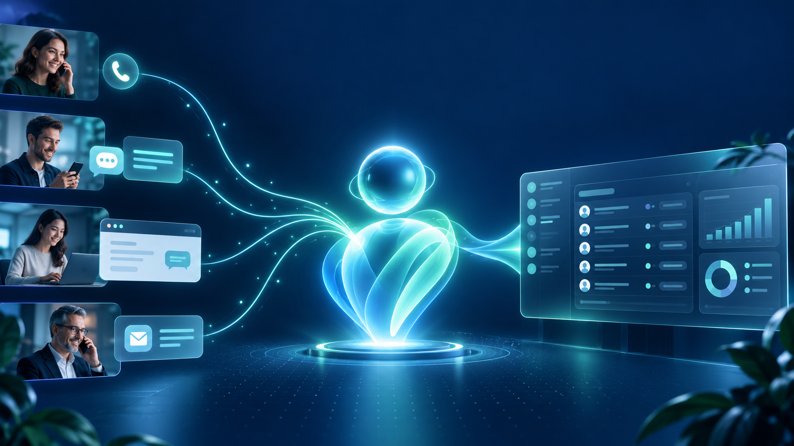
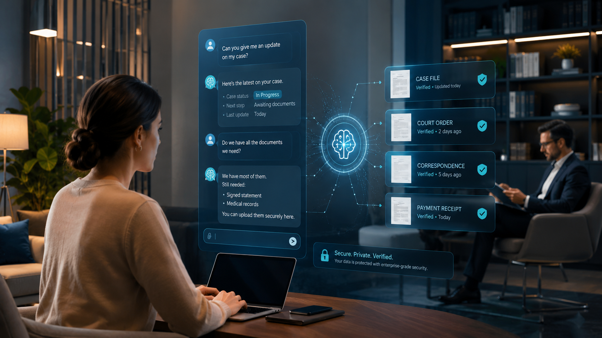
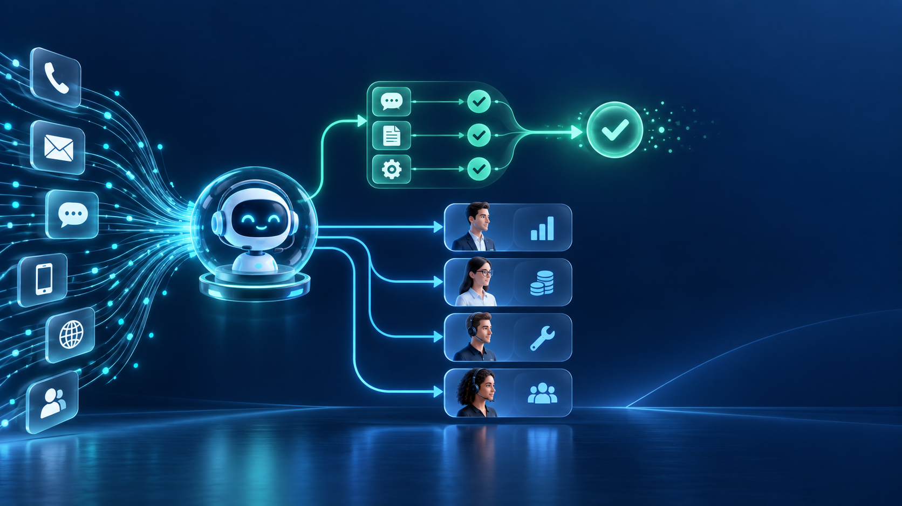

Входящая линия
Ответы 24/7, квалификация, частые вопросы и передача обращения нужному подразделению.
Посмотреть решение →Голосовые и текстовые ассистенты, Битрикс24 и отраслевые системы — с понятной задачей, измеримым результатом и реальными внедрениями.
Выбрать решениеОбсудить задачуАссистенты принимают звонки и сообщения круглосуточно, мгновенно отвечают клиентам, оформляют заказы и передают всю информацию в вашу CRM.
Ориентировочные показатели. Фактический эффект зависит от процессов и объёма обращений.

Ответы 24/7, квалификация, частые вопросы и передача обращения нужному подразделению.
Посмотреть решение →Состав заказа, адрес, дата и время доставки фиксируются автоматически.
Посмотреть решение →Контакты, расшифровки и результаты общения сразу появляются в рабочей системе.
Посмотреть решения →Типовые вопросы решаются автоматически, сложные — передаются профильному специалисту.
Посмотреть решение →Каждый кейс открывается на отдельной странице с описанием задачи, решения и результата.
Привлечение, квалификация и сопровождение клиентов.
 Открыть кейс →
Открыть кейс →
Открыть кейс → Открыть кейс →
Открыть кейс →Переговоры по реестрам задолженности с фиксацией результата.
Поиск и квалификация партнёров для брокерской сети.
Консультация пациентов и запись на услуги.
Проверенные ответы по внутренним документам.
Единые процессы продаж и управления персоналом.
Системы для вахтового персонала и регулярных заказов.
Начинаем с наиболее полезного процесса, запускаем пилот и постепенно расширяем автоматизацию.
Изучаем обращения, точки потерь и нагрузку на сотрудников.
Готовим диалоги, интеграции и правила передачи специалистам.
Проверяем решение на реальных обращениях и контролируем качество.
Улучшаем сценарии, аналитику и подключаем новые процессы.
Проектируем ИИ-ассистентов, внедряем Битрикс24 и связываем телефонию, мессенджеры, CRM и внутренние системы. Решение строится вокруг процесса компании, а не вокруг отдельной технологии.

Срок зависит от сценария и количества интеграций. Пилот одного процесса обычно запускается быстрее комплексной автоматизации нескольких подразделений.
Да, если система предоставляет API. Работаем с Битрикс24, amoCRM, YCLIENTS и собственными системами заказчика.
Да. Он может перевести звонок, создать задачу, направить сообщение или передать структурированную заявку ответственному специалисту.
Для проектов с повышенными требованиями к размещению данных предусмотрен вариант развёртывания в инфраструктуре заказчика.
Разберём вашу схему работы, предложим первый сценарий и предварительно оценим эффект.
Разберём текущую схему работы, точки потерь и возможный формат автоматизации.